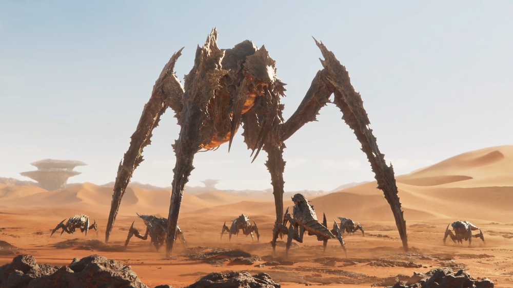
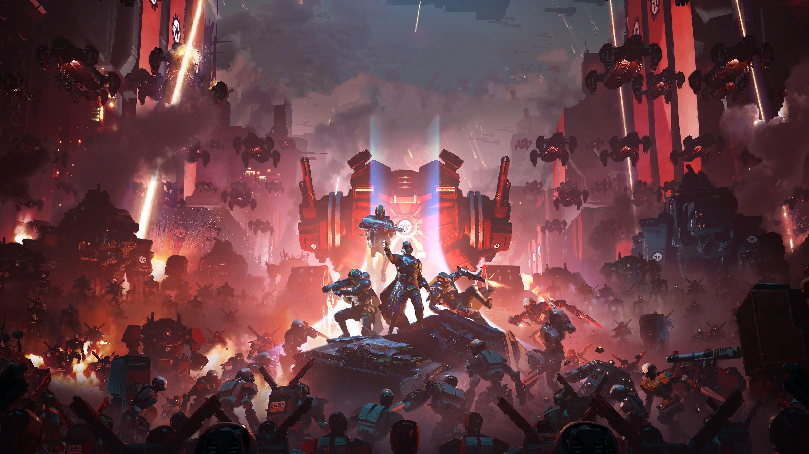
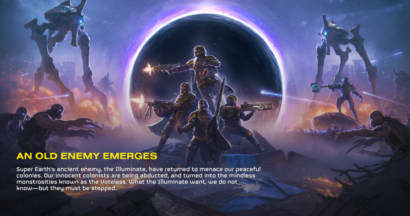

Facções da Guerra Galáctica
Panorama de Inteligência Tática
A galáxia é um campo de batalha implacável. Enquanto a Super Terra luta para manter a paz e a Democracia Gerenciada, ameaças alienígenas e sintéticas cercam nossas fronteiras. Conheça as quatro grandes forças que moldam o conflito galáctico.
Federação da Super Terra
imagens/faccoes/super-terra.jpg'">
O bastião da Liberdade, Prósperidade e Democracia Gerenciada. A Super Terra envia seus elite combatentes — os Helldivers — para espalhar a paz e defender o estilo de vida humano contra todas as ameaças espaciais.
Termínios (Terminids)

🖼️ Adicione a imagem em:imagens/faccoes/terminids.jpg'">
Uma praga alienígena em constante evolução biológica. Movidos por puro instinto de expansão e destruição, atacam em grandes hordas violentas. São também a principal fonte do valioso recurso Elemento 710 (E-710).
Autômatos (Automatons)

🖼️ Adicione a imagem em:imagens/faccoes/automatons.jpg'">
Uma facção robótica impiedosa e altamente militarizada que odeia a liberdade. Equipados com pesadas blindagens, tanques, serras elétricas e artilharia pesada, eles marcham sem parar exterminando tudo em seu caminho.
Iluminados (Illuminates)

🖼️ Adicione a imagem em:imagens/faccoes/illuminates.jpg'">
Uma civilização ancestral extremamente avançada tecnologicamente. Utilizam escudos de energia, armas de plasma, ilusões e tecnologia de dobra espacial para tentar desestabilizar o domínio da Super Terra.